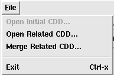
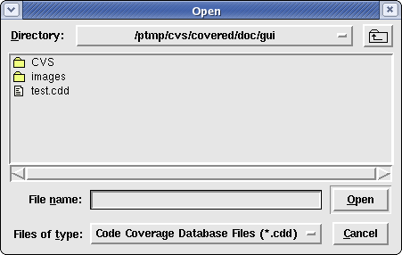
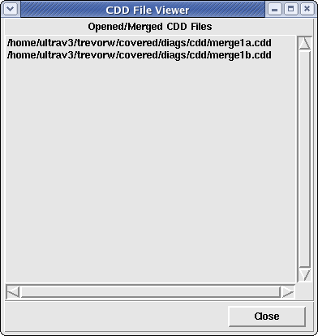
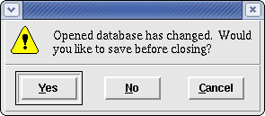
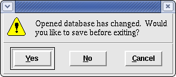

The file menu is used to open a new CDD file, merge a related CDD file (derived from the same design as the currently opened CDD file, save the currently opened CDD file(s), close all opened CDD files, generate different types of output and view the names of all currently opened CDD files. Additionally, the user selects this menu bar to exit the Covered report viewer GUI. Figure 1 shows the file menu contents within the main window.
Figure 1. The File Menu
This menu option is used to either open a new CDD file or merge a related CDD file into the currently opened CDD file(s). This action needs to be performed before any coverage viewing can take place. When this option is selected, a standard file window is displayed allowing the user to select one (or possibly more depending on your version of Tcl/Tk) CDD file to open or merge (see Figure 2). To select more than one CDD file with one call to this option, simply press and hold the Control key while selecting files with the left mouse button. If your version of Tcl/Tk supports this feature, you will see multiple files highlighted for selection; otherwise, only the last selected file will be selected. If no CDD files currently are opened, any CDD file may be opened. If one or more CDD files have been opened/merged, only CDD files generated from the same design may be merged.
Note that this option has an accelerator keystroke <Control-o>. Hitting this keystroke combination will also open new CDD file(s).
Figure 2. The Open/Merge CDD Selection Window
This menu option is only available after an initial CDD file has been opened using the "Open/Merge CDDs..." file menu option. When this menu option is selected, a new window displaying all currently opened CDD files is displayed (see Figure 3 below). If another CDD file is merged and this window is currently displayed, it is automatically updated with the newly added file. If the "Close CDDs..." file menu option is selected while this window is opened, all filenames will be automatically removed to indicate this. The "View Loaded CDD(s)..." menu option is useful for helping the user see exactly which files have been merged or not merged in the current viewer. Simply click on the close button in the "Loaded CDD file viewer" window to close the window.
Figure 3. The CDD Opened File Viewer Window
This menu option is only available after one or more CDD files have been opened/merged. It is used to save the opened or merged CDD files as a single, merged CDD file than can be viewed as a separate CDD file or can be merged with other CDD files. It is also used to save any changes that the user has made to exclude/include coverage cases within the GUI. If you would like to retain this information, please save the CDD file. By default, the name of the first loaded CDD file is placed in the "Save As" window when this option is selected. The user may choose to replace the old CDD file with the new one, or the user may save it under a different name. Once a CDD file has been saved, this option is deselected until either a new CDD file is merged or the user changes the exclude/include property of any coverage case within the GUI.
Note that this option has an accelerator keystroke <Control-s>. Hitting this keystroke combination will also save the current CDD.
This menu option is used to close all opened/merged CDD files so that the user may view a different CDD file without needing to exit and re-enter the GUI. The user may open and close as many times as needed without needing to reinvoke the GUI. When CDD files are closed, any opened coverage windows are automatically closed and all necessary GUI components are restored to their original state as when the GUI is first invoked. If the currently opened CDD file(s) have not been saved, a window (shown in Figure 4 below) is displayed to ask the user if they would like to save prior to closing. To save the CDD file, simply click "Yes" and a "Save As" window will prompt you for a location/name to save it as. To close the CDD file without saving, simply click "No". To cancel the close operation, simply click "Cancel". To view another CDD file after closing all CDD files, simply select the "Open/Merge CDDs..." file menu option.
Note that this option has an accelerator keystroke <Control-w>. Hitting this keystroke combination will also close all opened CDD files.
Figure 4. The Close Warning Window
This option, when selected, displays a submenu of items that can be generated by the GUI. The following options (with descriptions) are available (see Figure 5).
Figure 5. The Generate Menu List
Selecting this submenu option will cause Covered to generate an ASCII version of the coverage report to a specified file (note: this can also be accomplished with the "report" command of Covered's command-line interface). When this option is selected, another window is created that lists the current report generation options as specified in the Preferences window. Additionally, the user may modify the report generation options and select the name of the coverage report file to save. See ASCII Report Generation Window for more information on the navigation of this window.
Note that this option has an accelerator keystroke <Control-r>. Hitting this keystrokey combination will also cause the ASCII report generator window to be displayed.
This menu option will exit the entire GUI application, closing all opened windows created by this application. Use this option to exit the application. If the currently opened CDD file(s) have not been saved, a window (shown in Figure 6 below) is displayed to ask the user if they would like to save prior to exiting. To save the CDD file, simply click "Yes" and a "Save As" window will prompt you for a location/name to save it as. To close the CDD file without saving, simply click "No". To cancel the close operation, simply click "Cancel".
Note that this option has an accelerator keystroke <Control-x>. Hitting this keystroke combination will also close the entire application.
Figure 6. The Exit Warning Window
